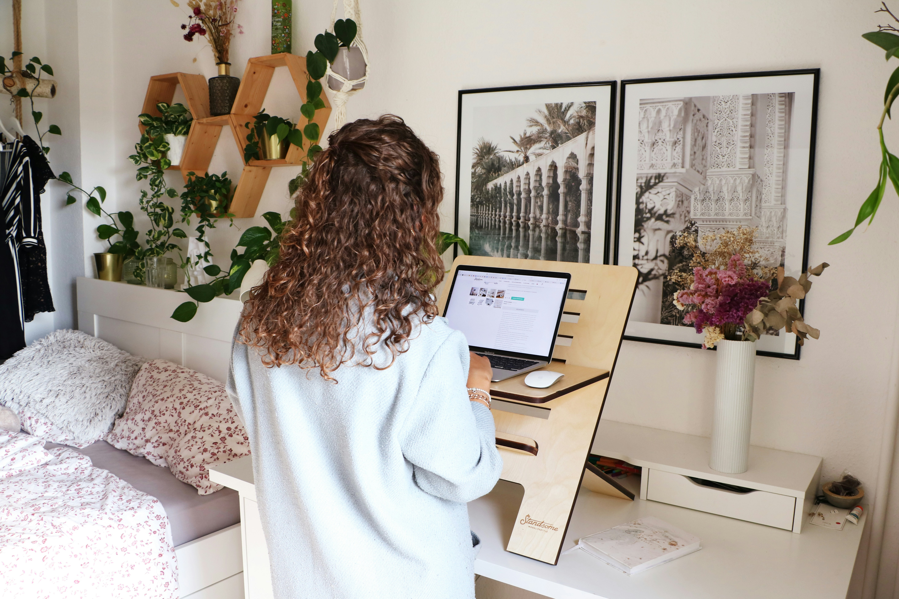

Le télétravail s'est généralisé, mais il entraîne souvent des
douleurs musculaires et articulaires dues à une mauvaise posture.
Découvrez comment l'ostéopathie peut vous aider à éviter et soulager
ces troubles.

Pourquoi le télétravail favorise-t-il les TMS ?
Une position prolongée devant un écran, un mobilier inadapté et un
manque de pauses actives contribuent à l’apparition de
troubles musculo-squelettiques (TMS). Les zones les
plus touchées sont :
Le dos : tensions lombaires et dorsales.
Les épaules : douleurs liées à une mauvaise
posture.
Les poignets : syndrome du canal carpien et
douleurs articulaires.
Les cervicales : raideurs et maux de tête.
Conseils pour prévenir les TMS en télétravail
Adoptez ces bonnes pratiques pour préserver votre santé :
Ajustez votre poste de travail : écran à hauteur
des yeux, chaise ergonomique.
Faites des pauses régulières : levez-vous toutes
les 30 minutes.
Pratiquez des exercices d’étirement pour détendre
muscles et articulations.
Alternez positions assises et debout pour varier
les sollicitations musculaires.
L'ostéopathie : une solution efficace
Un suivi en ostéopathie permet de :
Soulager les tensions musculaires et
articulaires.
Améliorer la posture et la mobilité.
Réduire les douleurs chroniques liées au
télétravail.
Une séance régulière avec votre ostéopathe peut vous aider à adopter
de meilleures habitudes et à prévenir ces douleurs.